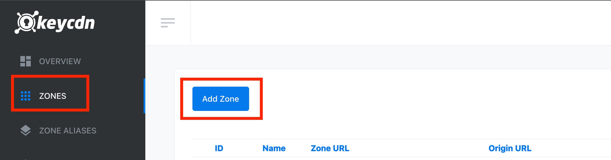
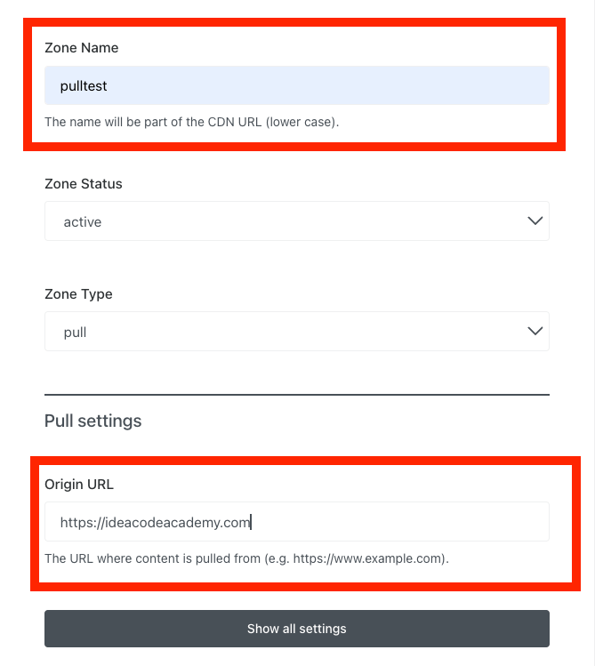
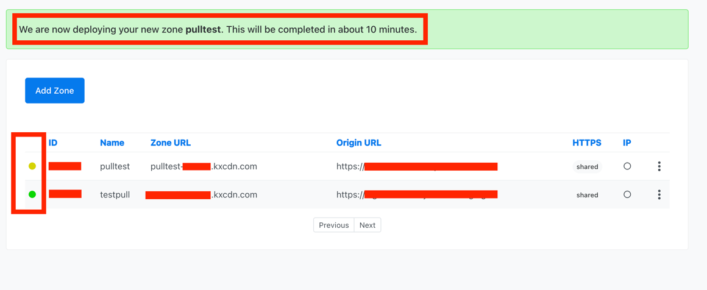
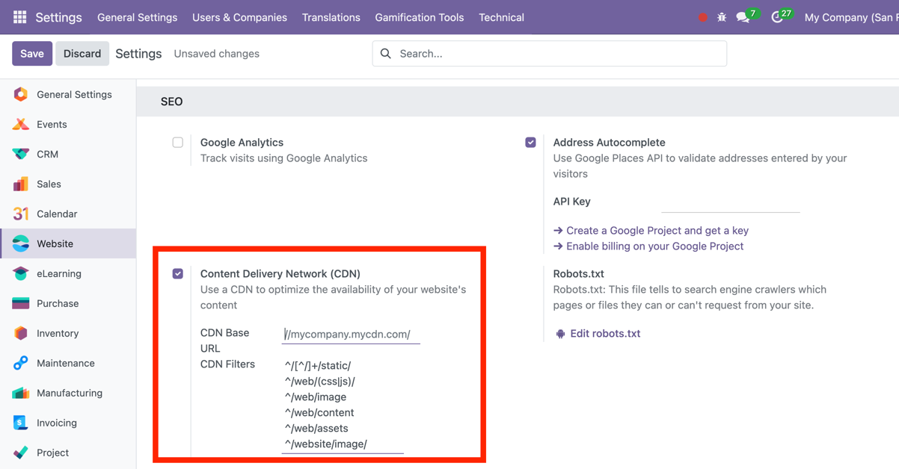
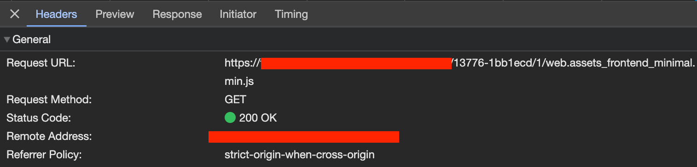

Set up a content delivery network ( CDN )
-
odoo ကို keycdn ဖြင့် ချိတ်ဆက်ရန်အတွက် ပထမဆုံး keycdn.com တွင် အကောင့်ဖွင့်ပါ။ credit card မလိုပဲ အကောင့်စဖွင့်ဖွင့်ချင်း 1 credits ပေးပါသည်။
-
ပြီးလျှင် အောက်ပါပုံအတိုင်း zone ထဲမှ add zone ကို နှိပ်ပါ။

-
နောက်ထပ်အနေဖြင့် zone name နှင့် original url ကို ဖြည့်သွင်းပြီး save လိုက်ပါ။

-
ယခုအချိန်တွင် မိမိတို့ ဖြည့်သွင်းလိုက်သော pulltest ဆိုသည့် zone ကို deploy ပြုလုပ်ရန် ဆယ်မိနစ်ခန့်ကြာပါမည် ဆိုသည့်စာသားနှင့်အတူ အောက်ပါအတိုင်း တွေ့ရပါမည်။ deploy ပြီးဆုံးသည့်အခါတွင် ID Column ဘေးမှ status တွင် ဒုတိယ zone အတိုင်း အစိမ်းရောင်ဖြင့် ဖော်ပြပါလိမ့်မည်။ deploy ပြုလုပ်ပြီးလျှင်
Zone URLကို copy ကူးပါ။
-
မိမိတို့၏ odoo server ကို CDN ဖြင့် ချိတ်ဆက်ရန်အတွက် CDN settings ကို on နိုင်ရန် developer mode ဖွင့်ထားရပါမည်။ လွယ်လွယ်ကူကူဖြစ်စေရန် url တွင် web နောက်မှ
?debug=1ဆိုသည့် optional parameter ကို အသုံးပြုပြီး ဖွင့်နိုင်ပါသည်။Original URL - ``` https://runbot.odoo.com/web#active_id=mail.box_inbox ``` Debug On - ``` https://runbot.odoo.com/web?debug=1#active_id=mail.box_inbox ``` -
ဆက်လက်ပြီး website settings ထဲမှ Content Delivery Network (CDN) ကို on ပေးရပါမည်။

-
အထက်ပါပုံတွင် CDN settings ကို on ထားပြီး CDN Base URL တွင် မိမိတို့၏ copy ကူးယူလာသော Zone URL ကို ရှေ့ဆုံးတွင် (//) နှင့် နောက်ဆုံးတွင် (/) တို့ကို ထည့်သွင်းပြီး အောက်ပါအတိုင်း ဖြည့်သွင်းရပါမည်။
-
Zone URL ကို ဖြည့်သွင်းပြီးလျှင် မိမိတို့၏ browser ထဲမှ devtools တွင် inspect ထောက်ပြီး network ထဲတွင် အောက်ပါအတိုင်း စစ်ဆေးနိုင်ပါသည်။

အထက်ပါပုံတွင် မိမိတို့ server သို့ request လုပ်ရမည့်အစား CDN server သို့ request လုပ်သွားကြောင်း တွေ့နိုင်ပါသည်။